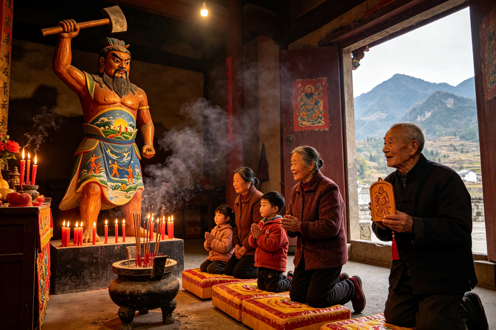

Honoring the First Being
On the 12th day of the 10th lunar month, incense rises at Pangu temples across China. From the grand Pangu Temple in Hebei to village shrines in Guangdong — how the oldest being in Chinese myth is honored in the world his body became.
The single most important date in the Pangu liturgical calendar falls on the 12th day of the 10th lunar month (usually November in the Gregorian calendar). This day is universally recognized across the surviving Pangu worship tradition as Pangu's birthday — the anniversary of his emergence from the cosmic egg of Hundun. On this day, temples that still maintain the old rites awaken before dawn. Red banners are hung from the temple gates. Incense burners are cleaned and filled with fresh sandalwood. The air, even in the coldest November mornings, fills with the smoke of devotion.
The festival is particularly important in regions where Pangu temples have survived the vicissitudes of Chinese history. Hebei Province, particularly Qing County, is home to the largest Pangu temple complex in China, and the festival there draws thousands of pilgrims. Guangdong and Guangxi also maintain active Pangu worship traditions, often blending the primordial creator with local folk deities. The rituals are precise and meaningful: families arrive before dawn carrying offerings of incense and candles, presenting food offerings — especially peaches, the universal symbol of longevity that connects Pangu worship to the peach garden of the Queen Mother of the West. Paper offerings inscribed with prayers for health and prosperity are burned in special furnaces, the smoke carrying the petitioners' words upward. In many communities, the festival includes the ritual telling of the Pangu creation story by temple elders — an oral tradition that stretches back into the deep past, when the myth was transmitted through speech alone.
Unlike the boisterous festivals for popular gods like Sun Wukong or Guanyin, whose temple fairs are cacophonies of firecrackers, opera, and market stalls, Pangu's festival tends to be more solemn and reverent. This suits the character of the first being — he is not a god who answers prayers or intervenes in human affairs. He is the origin, the one who gave his body to become the world, and the proper response to such a being is not loud celebration but quiet gratitude. In some villages, the festival includes lion dances and dragon dances — the dragon being a symbol of the cosmic energies Pangu mastered — but even these performances are conducted with a dignity that sets them apart from the riotous celebrations for other deities. Some communities also visit local Nüwa temples during the same pilgrimage, combining the worship of the first cosmic being with the goddess who shaped humanity from clay — a pairing that reflects the deep complementarity of the two creation myths in Chinese folk religion.
Pangu's temples are fewer and humbler than those of the great deities of the Chinese pantheon — there is no Pangu temple complex rivaling the scale of the Jade Emperor's grand sanctuaries or the ubiquity of Guanyin's shrines. But the temples that do exist carry a unique spiritual gravity, for they are understood not merely as houses of worship but as places where the veil between the mortal world and Pangu's body-thing is thinnest.
Pangu Temple (盘古庙), Qing County, Hebei — The largest and most famous Pangu temple complex in China. Its centerpiece is a massive wooden statue of Pangu holding his axe aloft, his body painted with vivid scenes of the creation: the cosmic egg splitting, the 18,000 years of separation, the final transformation into the world. The temple dates to the Yuan dynasty (1271–1368), with archaeological evidence suggesting earlier foundations from the Tang dynasty (618–907). The temple complex follows the traditional Chinese layout: a series of courtyards leading to the main hall, flanked by side halls dedicated to associated deities. Incense burners stand in the central courtyard, their surfaces darkened by centuries of smoke. The atmosphere inside the main hall is as the ai-image-prompts describe: towering wooden statue, red candles flickering at his feet, incense smoke curling upward, the faces of worshippers lit by the warm glow of devotion.
Pangu Mountain (盘古山), Henan Province — A sacred mountain believed to be the very place where Pangu finally lay down and transformed into the world. Pilgrims climb the mountain on his festival day, touching the rocks as if touching the bones of the creator. The ascent is itself a devotional act — each step is a meditation on the body that became stone and soil. At the summit, a modest temple marks the traditional site of Pangu's final rest.
Pangu King Temple, Guangdong — In southern China, Pangu is worshipped as Pangu Wang (盘古王), the "King of Pangu." Local tradition holds that this region was among the first land to emerge when Pangu separated heaven and earth. The temple features a unique syncretic blend of Pangu worship with local folk traditions, including offerings of rice wine and the burning of spirit money alongside the more orthodox incense and fruit.
Pangu Shrines in Guangxi — Among the Zhuang minority communities of Guangxi, Pangu is incorporated into local animist traditions. Small shrines at village entrances, often consisting of nothing more than a carved wooden post or a standing stone, represent the cosmic pillar of Pangu's body. These shrines blend the Han Chinese Pangu myth with indigenous Zhuang creation traditions, creating a unique fusion that has survived largely unnoticed by the outside world. The architecture of Pangu temples, whether grand or humble, shares a common vocabulary: the traditional Chinese temple layout with courtyards, incense burners, and the main hall housing Pangu's image. Some temples, like the one in Qing County, show clear influence from Buddhist temple architecture — the layout of halls, the use of guardian figures at the gate, and the integration of Buddhist iconography alongside Pangu imagery. This syncretism reflects the fluid boundaries of Chinese folk religion, where Pangu, the Buddha, and local deities can coexist under the same roof, each receiving the offerings appropriate to their station.
The folk worship practices associated with Pangu are among the most distinctive in Chinese folk religion. Unlike the elaborate rituals directed at the Lord Lao or the standardized incense-and-prayer routines at Guanyin shrines, Pangu worship has developed a unique repertoire of practices that reflect the primordial, elemental nature of the first being.
Peachwood Amulets (桃木符) — Among the most personal and widespread forms of Pangu devotion are amulets carved from peachwood, inscribed with Pangu's image or the character 盘 (Pan). In Chinese folk religion, peachwood has powerful apotropaic properties — it wards off evil spirits and protects the bearer from harm. Pangu amulets carry a specific resonance: they protect against what might be called "primordial chaos" — disorder, confusion, mental illness, the dissolution of boundaries that keeps a person from functioning in the world. The amulet is worn around the neck or kept in the home, usually above the doorway, and is believed to bring clarity, order, and groundedness to the wearer — the same qualities that Pangu brought to the universe when he swung his axe through the formless void.
Stone Offerings — Perhaps the most unique practice in Pangu worship is the tradition of stone offerings. Unlike other deities who receive food, wine, incense, and spirit money, Pangu uniquely receives stones as offerings. Worshippers bring small stones — collected from riverbeds, mountainsides, or simply picked up from the roadside — and leave them at the feet of Pangu's statue. This practice symbolizes returning a fragment of the world to the one whose body became the world. Over years and decades, these stone piles grow into miniature mountains at the base of Pangu's statue, a physical manifestation of accumulated devotion. In some temples, the oldest stone piles predate the temple itself — stones brought by generations of worshippers, each one a prayer made solid.
Creation Story Recitation — On festival days, the Pangu creation story is ritually recited by temple priests or community elders. The full recitation takes approximately one hour and covers the cosmic egg of Hundun, the 18,000-year gestation, the great division with the cosmic axe, the second 18,000-year period of pushing heaven and earth apart, and the final transformation into the world. In some communities, the recitation is performed in classical Chinese, preserving the ancient rhythms of the Sanwu Liji text; in others, it is rendered in the local dialect, allowing even the illiterate to participate in the transmission of the sacred narrative.
Earth-Touching Ritual — Worshippers touch their foreheads to the ground three times before Pangu's altar. This act, superficially similar to the kowtow offered to other deities, carries a fundamentally different meaning in the context of Pangu worship. It is not an act of submission to a ruler-god but an act of connection — touching the body of the earth, which is Pangu's body. The worshipper is not bowing to a distant lord but pressing their forehead against the flesh of the first being, who is both the ground they kneel on and the air they breathe.
Axe-Bearing Processions — In Qing County, the festival reaches its climax with a procession in which a massive replica of Pangu's cosmic axe is carried through the streets. Young men compete for the honor of bearing the axe, which can weigh over a hundred kilograms. The procession winds through the town, accompanied by drumming and chanting, reenacting Pangu's first steps through the newly created world. The Bull Demon King, who also receives folk worship in some rural regions, shares with Pangu this tradition of processional weapon-display, though the axe of Pangu carries cosmological significance that far exceeds the ritual function of the Bull King's iron staff.
The story of Pangu worship in modern China is a story of destruction, survival, and gradual revival. During the Cultural Revolution (1966–1976), when organized religion was suppressed across China, Pangu temples suffered severely. The great Pangu Temple in Qing County was razed to the ground. Its massive wooden statue was broken apart and burned. Temple records dating back centuries were scattered or destroyed. Practitioners who continued to perform Pangu rites did so in secret, in private homes, passing the traditions orally to their children in whispers.
Since the 1980s, there has been a slow but determined revival. The Qing County Pangu Temple was rebuilt in the 1990s, funded by local community donations and contributions from overseas Chinese who remembered the temple from before its destruction. The new statue, while not identical to the original, was carved with the same iconography — Pangu with axe aloft, his body painted with creation scenes — and consecrated in a ceremony that drew thousands of worshippers. Today, the rebuilt temple stands as a testament to the resilience of folk religion in China, a tradition that has survived dynasty, revolution, and modernization.
Pangu worship in the 21st century exists at the intersection of several social forces. The official recognition of the Pangu myth as intangible cultural heritage by the Chinese government has given the tradition a legitimacy it lacked during the revolutionary period. Tourism has brought new visitors — and new revenue — to Pangu temples, which are increasingly marketed as cultural destinations alongside their religious function. Environmental consciousness has given Pangu worship a new relevance: the concept that Pangu's body IS the earth, and that harming the earth is harming Pangu, resonates with young, educated Chinese who are seeking an ecological ethics rooted in their own cultural tradition rather than imported from the West.
The worshippers of Pangu today are diverse. They include elderly rural residents who have maintained family traditions of devotion across decades of suppression. They include young Chinese exploring traditional culture as an alternative to the materialism of rapid economic development. They include environmental activists who have adopted Pangu as a symbol of the sacredness of the natural world. And they include diaspora Chinese in Southeast Asia, North America, and Europe, who maintain Pangu shrines in their communities as a way of staying connected to their cultural roots. The Pangu festival in Qing County now draws tens of thousands of visitors annually — a number that grows each year. The revival of Pangu worship mirrors similar revivals for Nüwa and the Queen Mother of the West, whose temple traditions also suffered during the Cultural Revolution and have since been rebuilt by communities determined to preserve their spiritual heritage. Guanyin's worship, which never declined as severely due to her immense popularity across all sectors of Chinese society, serves as a model for what Pangu worship might become: a tradition that is both authentically ancient and fully at home in the modern world.
The 12th day of the 10th lunar month (usually November in the Gregorian calendar). This is celebrated as Pangu's birthday — the day he emerged from the cosmic egg. The festival is marked by incense offerings, food offerings (especially peaches), the ritual recitation of the creation story, and in some regions, axe-bearing processions through the streets. The most important celebrations occur at the Pangu Temple in Qing County, Hebei, and at Pangu Mountain in Henan Province.
The Pangu Temple (盘古庙) in Qing County, Hebei Province, is the largest and most famous Pangu temple complex in China. Originally built during the Yuan dynasty (1271–1368), with foundations possibly dating to the Tang dynasty, it was destroyed during the Cultural Revolution and rebuilt in the 1990s through local and overseas Chinese donations. The temple houses a massive wooden statue of Pangu holding his axe aloft, his body painted with scenes of the world's creation.
Yes. While Pangu worship is less widespread than that of Guanyin, the Jade Emperor, or Mazu, it persists in regions with Pangu temples (Hebei, Henan, Guangdong, Guangxi) and is experiencing a revival as part of the broader resurgence of Chinese folk religion. The Pangu festival in Qing County now draws tens of thousands of visitors annually. Modern worshippers include elderly rural devotees, young Chinese exploring traditional culture, environmental activists, and diaspora Chinese communities abroad.
Dive Deeper